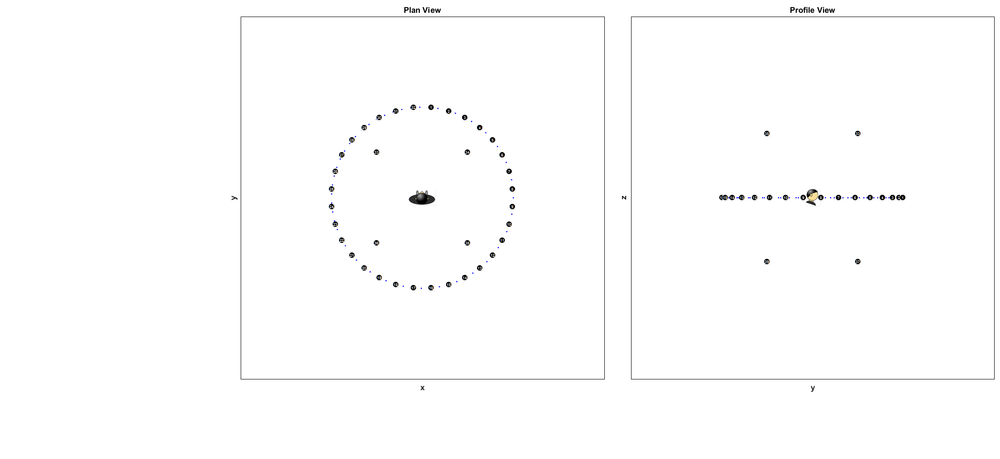
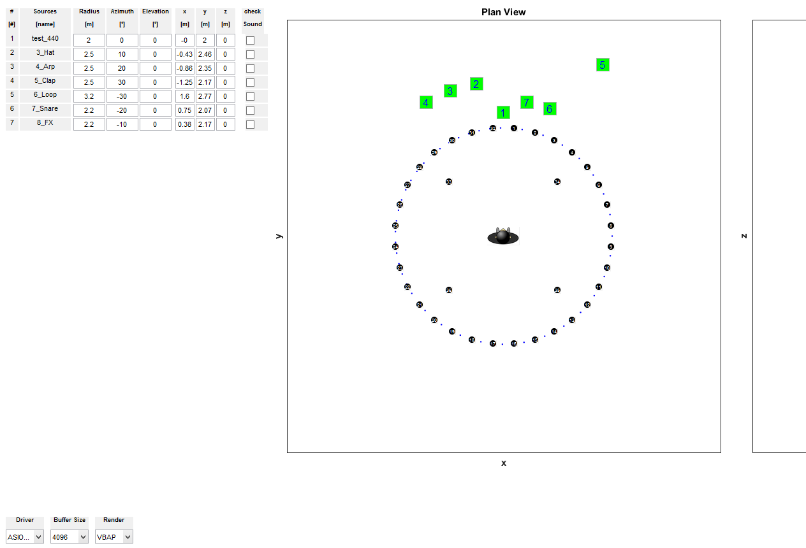

SART3D - 3D Spatial Audio Rendering Toolbox
This is the main function of the toolbox. It generates the GUI from the initial configuration structure obtained by gConfig and gCheckConfig.
Contents
- Initialization
- Programmatic GUI construction
- === Component Placement ============================================
- == Calculate initial rendering coefficients and filter objects =====
- === Initialize Drag & Drop== =======================================
- === Audio Objects ===================================================
- === Initialize Repproduction =======================================
- === While play button is on ====================================
function [] = SART3D()
Initialization
Toolbox initialization.
Clear workspace and clean screen:
clear all; close all; clearvars -global; clc;
Add folders to path:
addpath('images', genpath('audioscenes'), 'objects', 'setups',... 'gui_elements', 'configurations', genpath('functions'));
Load configuration structure obtained by gConfig.m. You can select your own MAT file containing the intended configuration structure.
global conf; load('conf.mat','conf');
Initialize the data structure used by the GUI in guidata. Contains:
- Data matrix with rendering filters (or coefficients) (1)
- Logical matrix indicating loudspeakers contributing to synthesis (2)
- Filtering objects (3)
- Indices of changing loudspeaker for each source (4)
- Inactive loudspeakers for each source (5)
- Virtual source coordinates managed by the GUI (6)
data.H = zeros(conf.nVS, conf.nLS, conf.nCoeffs); % (1) data.I = zeros(conf.nVS, conf.nLS); % (2) data.Ho = cell(conf.nVS, conf.nLS); % (3) data.Ichange = cell(conf.nVS); % (4) data.Izeros = cell(conf.nVS); % (5) data.vSSph = reshape(cell2mat(conf.VS.coord),3,[]); % (6)
Programmatic GUI construction
This section starts the code to build the GUI according to the configuration structure.
Global variables needed to speed up processing.
global handles v; %--- Get dimensions of components in GUI --------------------------- v = gSizes; %--- Create figure (not shown until all elements are load) --------- f = figure('Visible', 'on', 'Position', v.bounds,... 'Color', v.bgColor); %-- Window Title --------------------------------------------------- set(f, 'Name', 'SART-3D (3D Spatial Audio Rendering Toolbox)',... 'NumberTitle', 'off', 'MenuBar', 'none'); set(f,'Renderer','painters'); %-- Create Axes ---------------------------------------------------- gDrawScene(v.bounds_axes_plan, 'plan'); hold on; gDrawScene(v.bounds_axes_profile, 'profile'); hold on; % We declare graphical data from GUI to start loading components handles = guihandles(f);
=== Component Placement ============================================
% ********************************************************************* % Script that places components in the GUI %run('mPlaceComp.m'); mPlaceComp; % ********************************************************************* % -- Logo ----------- GImage(gcf, '', v.bounds_logo, 'logo_spat.png'); % Move GUI to top-right corner: movegui(f, 'northwest'); % Make the GUI visible: set(f, 'Visible', 'on'); % We load globally all the graphical objects that will be modified % through execution so that other functions do not need to load them. % This makes the program faster. handles = guihandles(f);
== Calculate initial rendering coefficients and filter objects =====
for ii = 1:conf.nVS for jj = 1:conf.nLS data.Ho{ii,jj} = GfftFIRm(conf.SamplesPerFrame,zeros(conf.nCoeffs,1)); end end guidata(f,data); for ii = 1:conf.nVS gRefreshH(f, ii); end data = guidata(f);
=== Initialize Drag & Drop== =======================================
% Store virtual source (objects) positions in plan and profile view data.VSxy = zeros(2, conf.nVS); data.VSyz = zeros(2, conf.nVS); for ii = 1:conf.nVS VSaux = get(handles.textsVS(ii), 'Position').'; % Plan x-y data.VSxy(1,ii) = VSaux(1) + VSaux(3)/2; data.VSxy(2,ii) = VSaux(2) + VSaux(4)/2; VSaux = get(handles.textsVSProfile(ii), 'Position').'; % Profile y-z data.VSyz(1,ii) = VSaux(1) + VSaux(3)/2; data.VSyz(2,ii) = VSaux(2) + VSaux(4)/2; end % Used for positioning when using spatial resolution global lastp lastp = [0;0;0]; % Save changes in guidata: guidata(f, data); % Relate mouse motion to Drag And Drop custom function: set(f, 'WindowButtonMotionFcn', @gDnD);
=== Audio Objects ===================================================
Initialize DSP System Input Audio Objects
data.in = {conf.nVS};
for ii = 1:conf.nVS
data.in{ii} = dsp.AudioFileReader;
data.in{ii}.Filename = conf.VS.fileNames{ii};
data.in{ii}.SamplesPerFrame = conf.SamplesPerFrame;
data.in{ii}.PlayCount = inf;
end
guidata(f, data);
end % ============= MAIN PLAYBACK FUNCTION ================================ function tbPlayOnCallback(hObject, ~)
global handles conf
=== Initialize Repproduction =======================================
Load GUI data
data = guidata(hObject);
% Initialize output object
out = dsp.AudioPlayer;
% Selected reproduction device from popupMenu:
deviceNames = get(handles.pmDevice, 'String');
deviceNameSelected = deviceNames(get(handles.pmDevice, 'Value'));
auxchar = char(deviceNameSelected);
out.DeviceName = auxchar;
% Set reproduction parameters:
%out.SampleRate = data.in{1}.SampleRate;
out.SampleRate = conf.fs;
out.BufferSizeSource = 'Property';
bufferSize = get(handles.pmBufferSize, 'String');
bufferSizeSelected = bufferSize(get(handles.pmBufferSize, 'Value'));
out.BufferSize = str2double(bufferSizeSelected);
out.ChannelMappingSource = 'Property';
out.ChannelMapping = conf.driver.ChannelMapping;
out.QueueDuration = conf.QueueDuration;
% Initialize output data:
voidChannels = zeros(conf.SamplesPerFrame, conf.nLS);
% Initialize required output data for smoothing:
y = voidChannels;
y1 = voidChannels;
y2 = voidChannels;
% Initialize input data:
x = zeros(conf.SamplesPerFrame,conf.nVS);
% Total audio out (will accumulate signals from different sources)
audio_out = voidChannels;
% Auxiliar vector storing last-frame contributing loudspeakers
Ilast = cell(conf.nVS);
% linear fade-in/out
%fadeOutMono = linspace(1, 0, conf.SamplesPerFrame).'; % [SamplesPerFrame]
%fadeInMono = linspace(0, 1, conf.SamplesPerFrame).';
% hanning fade-in/out
auxhann = hann(2*conf.SamplesPerFrame,'periodic');
fadeInMono = auxhann(1:conf.SamplesPerFrame);
fadeOutMono = auxhann(conf.SamplesPerFrame+1:end);
fadeOut = repmat(fadeOutMono, 1, conf.nLS); % [SamplesPerFrame x nLS]
fadeIn = repmat(fadeInMono, 1, conf.nLS);
=== While play button is on ====================================
while get(hObject, 'State') % 'On' by default % Load data from GUI (needed to get updated filters) data = guidata(hObject); % If play button is pressed again, break if strcmp(get(hObject, 'State'), 'off') break; end for ii = 1:conf.nVS % Read audio files: x(:,ii) = step(data.in{ii}); y1 = voidChannels; y2 = voidChannels; % Play audio from sources with active checkbox. If not, mute by % adding zeros. This is necessary for having synchronized % sources if get(handles.checkboxesVS(ii), 'Value') % Cross-fading if strcmp(conf.fadeBuffers, 'on') % Get each loudspeaker signal: % This works ok, but is computationally more expensive % for jj = 1:conf.nLS % y1(:, jj) = steplast(data.Ho{ii,jj},x(:,ii)); % y2(:, jj) = step(data.Ho{ii,jj},x(:,ii)); % end y1 = voidChannels; y2 = voidChannels; Ip = find(data.I(ii,:)~=0); I = unique([Ip,Ilast{ii}]); for jj = 1:length(I) y1(:, I(jj)) = steplast(data.Ho{ii,I(jj)},x(:,ii)); y2(:, I(jj)) = step(data.Ho{ii,I(jj)},x(:,ii)); end Ilast{ii} = Ip; % Apply cross-fading: y = y1.*fadeOut+y2.*fadeIn; % Mix fade-in and fade-out signal else % No frame smoothing y = voidChannels; Ip = find(data.I(ii,:)~=0); for jj = 1:length(Ip) y(:, Ip(jj)) = step(data.Ho{ii,Ip(jj)},x(:,ii)); end end guidata(gcf,data); else y = voidChannels; % Mute end % Accumulate audio from different sources audio_out = audio_out + y; end step(out, audio_out); % Reproduce audio stream % Reset audio stream for next callback. audio_out = voidChannels; drawnow; end % % Release resources: % for ii = 1:conf.nVS % release(data.in{ii}); % end % release(out);
end function tbPlayOffCallback(hObject, ~) % Exit from tbPlayOffCallback()'s "while" set(hObject, 'State', 'off'); end